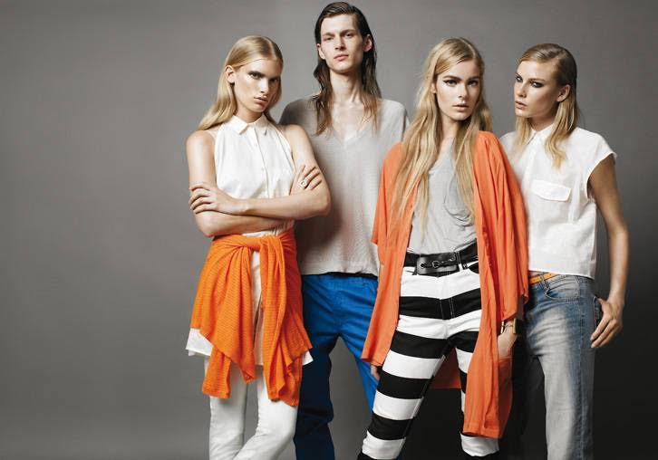
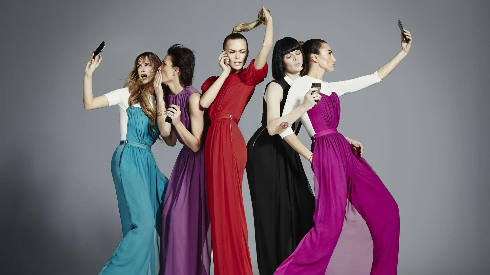
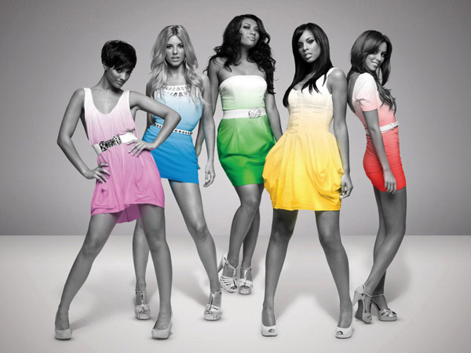
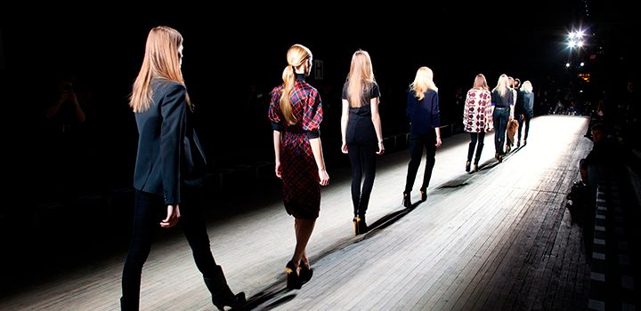

2017 - CONTACTO

|
|

London Fashion Week has been characterized to promote the proposals of the emerging designers trained institutions like Central Saint Martins. |

On this occasion, the event that has managed to make its place, also bet to show the emerging design of other countries like Norway, Vietnam, Uruguay or Argentina making the meeting a cosmopolitan exchange of design. |

In parallel, a showroom at the Argentine Embassy (65 Brook Street, London), showed the work of the designers of the Productive Identities program. |

Christopher Kane printed the drama on the runway through his camouflaged prints in different color combinations that he adapted to a silhouette that conveys the gait of a "strong" woman. |
|
2017 - CONTACTO
|